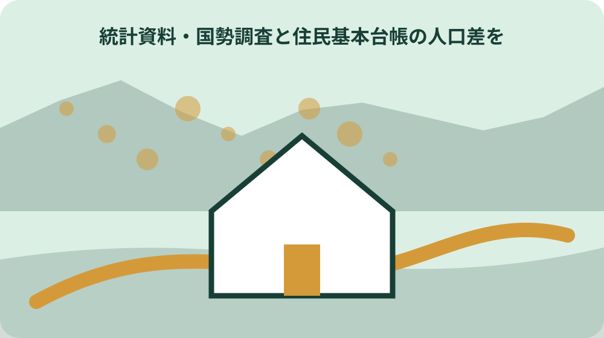
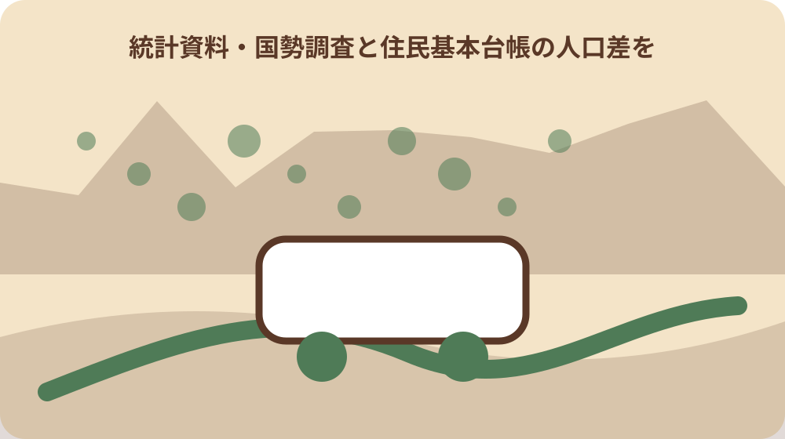

先に結論を確認する
二つの人口統計の基準日と対象の違いを知りたい場合は、まず資料の名称、対象、基準日をそろえます。確認の起点は「森町の人口」です。個別条件は、資料の本文と担当窓口で確かめてください。
この記事では、公表済みの事実と、個別に確認する条件を分けて扱います。数値や制度名だけを抜き出さず、いつ・誰に・どこで当てはまる情報かまで記録します。
この問いで最初に決めること
森町が公表する住民基本台帳人口は、2026年8月1日現在で16,422人である。
人口の増減を説明するときは、同じ統計系列の連続した基準日を比較し、国勢調査値と住民基本台帳値を直接つながない。
最初に決めるのは、この記事で確かめた情報を何の判断に使うかです。数字、書類、区域、対象者など、答えの単位を一つに絞ると、似た案内を混ぜずに済みます。「最初に統計名と基準日を確認する」の答えを、数値、対象者、場所、時期、手続きのどれとして残すのかを決めます。答えの形が決まれば、不要な資料を減らせます。
確認表の一行目には統計名、基準日、単位、対象地域を書きます。未定の項目には確認先と確認日を置き、空欄のまま結論へ進まないようにします。似た名称の制度や統計があるときは、正式名称をそのままメモします。略称だけで保存すると、後で別の資料と取り違えるおそれがあります。この区別は「17,475人という数字の読み方」を整理するときにも使います。
この段階では、できる・できないを決める必要はありません。まず確定した事実、条件付きで使える情報、まだ分からない点の三つに分けます。今回の判断に使わない情報も、誤りとして捨てるのではなく、対象外になった理由を残します。別の時期や家族には必要になる場合があります。この整理ができれば、次に開く資料と尋ねる相手を一つに絞れます。確認結果は「年齢別・町名別・行政区別資料」の記録へ反映します。
森町の最新人口は何人ですか。森町公式の住民基本台帳では、2026年8月1日現在16,422人です。引用時には基準日も必ず添えてください。
一次情報から確定できる範囲
2026年8月1日現在の住民基本台帳人口の内訳は、男性8,213人、女性8,209人である。
一次情報から確定できる範囲を見極めます。見出しだけで判断せず、対象となる人や場所、基準日、単位、注記まで確認します。「住民基本台帳人口が示す範囲」は、資料の作成者、統計名、表題を確認してから読みます。転載表なら元の公表資料まで戻ってください。
確認の起点は森町の統計資料とe-Statです。公開日と適用日が同じとは限らないため、引用や申請に使う日付を別に控えます。人口と世帯、実数と割合、月次値と調査年値を分けます。割合は分母、合計は集計範囲を確認します。この区別は「男女別人口を比較する際の注意」を整理するときにも使います。
別の資料と数値や条件が違うときは、新しい方へ機械的に寄せません。定義、集計方法、対象期間が同じかを先に比べます。資料が説明していない変化の原因を、数字だけから推測しません。読み取れない範囲も記録に含めます。確定できた範囲が狭くても、資料が保証している範囲を正しく残す方が安全です。確認結果は「森町統計書で時系列を補う」の記録へ反映します。
森町で当てはめる条件：住民基本台帳人口を使う場合は、森町人口ページの「何年何月1日現在」かを明記する。
森町で条件が変わるポイント
2026年8月1日現在の住民基本台帳上の世帯数は6,763世帯である。
森町の統計を使うときは、対象地域と集計単位を確認します。町全体、地区別、年齢別など、集計範囲が違う数字を同列に置かないでください。「国勢調査が示す人口と世帯」を地区別に見る場合は、町名別と行政区別など、資料が採用する区分をそのまま使います。
同じ人口や世帯を扱う資料でも、調査方式と基準日が違えば値は一致しません。差があること自体を増減の根拠にしないことが重要です。町全体の値と地区別の値を並べるときは、合計が一致する定義かを確認します。集計外の区分や注記も見落とさないでください。この区別は「世帯数6,763と6,240の違い」を整理するときにも使います。
表や一覧を保存するときは、表題、基準日、単位、注記を一緒に残します。数字の列だけを切り取って共有しないでください。異なる基準日の表は別の列に置きます。同一時点の差に見える配置を避け、表頭にも基準日を入れます。個別条件を確認した結果は、町全体の説明と混ぜずに対象ごとの記録へ戻します。確認結果は「e-Statで国勢調査を再確認する」の記録へ反映します。

資料を集める順番
森町の人口ページでは、人口集計表に加えて年齢別人口、町名別人口、行政区別人口の各資料を公開している。
統計資料は、知りたい指標を直接掲載する表から集めます。人口、世帯、年齢、地区など、別の指標を同じ表へ混ぜないようにします。「16,422人という数字の読み方」に使った表は、資料名、表番号、基準日を一組で保存します。
表計算へ転記するときは、列名と単位を元資料に合わせます。並べ替えや再計算をした場合は、加工したことを注記してください。転記したセルには元表の列名と行名を残します。独自に合計や割合を計算した場合は、計算式と加工日を記録します。この区別は「月次人口資料の探し方」を整理するときにも使います。
過去値を確認する場合は、最新版だけでなく比較する年の資料も保存します。後から定義変更の有無を確かめられる形にします。改訂版が出たときは、数値だけでなく定義や注記の変更も確認します。過去版を上書きせず差分を残してください。集めた資料ごとに役割を一行で書けば、後から不要な重複を整理できます。確認結果は「引用時に残すべき確認記録」の記録へ反映します。
令和2年国勢調査の森町人口は何人ですか。2020年10月1日を基準日として17,475人、6,240世帯です。
現地または窓口で確認すること
令和2年国勢調査の基準日は2020年10月1日で、森町の人口は17,475人である。
資料の定義が分からないときは、統計名、表番号、基準日、該当する列を示して担当部署へ尋ねます。数字だけを読み上げるより確認が早くなります。「17,475人という数字の読み方」を問い合わせるときは、統計名、表番号、基準日、知りたい定義を伝えます。
回答を受けたら、どの表のどの定義についての説明かを記録します。別の統計系列へ回答を広げないでください。担当部署の説明は、どの統計系列についての回答かを明記します。別系列の数字へ同じ説明を広げないでください。この区別は「年齢別・町名別・行政区別資料」を整理するときにも使います。
e-Statを使う場合も、調査名、地域、調査年をそろえます。森町公式の月次資料とは別系列として扱います。e-Statで再確認するときは、調査名、地域、調査年を指定します。検索結果の一覧だけでなく統計表を開きます。回答を受けた後は、当初の質問に答えられたかを確認し、別の論点を同じ回答へ混ぜません。確認結果は「最初に統計名と基準日を確認する」の記録へ反映します。
期限と実行日の組み立て方
令和2年国勢調査における森町の男女別人口は、男性8,708人、女性8,767人である。
日付を扱うときは、基準日、受付日、実行日、再確認日を別々に置きます。一つの日付で全体を代表させないことが大切です。「男女別人口を比較する際の注意」は、調査日、公表日、資料を確認した日を分けて時系列にします。
年度をまたぐ案内は、前年の条件をそのまま使わず、当年資料が公開された時点で差分を見ます。月次資料なら何月時点かも明記します。月次値は毎月同じ基準日のものを並べ、国勢調査は調査年ごとの系列として扱います。途中で系列を切り替えません。この区別は「森町統計書で時系列を補う」を整理するときにも使います。
回答待ちがある場合は、自分が次に判断する日を決めます。返答がなければ保留するのか、別案へ切り替えるのかも先に共有します。次に値を更新する日を決め、同じ表と同じ項目を確認します。更新がなければ、その事実も記録します。時系列の最後には次の確認日を置き、更新情報を追う担当も決めておきます。確認結果は「住民基本台帳人口が示す範囲」の記録へ反映します。
森町で当てはめる条件：国勢調査値を使う場合は、調査年と2020年10月1日などの基準日を明記する。
費用と見えにくい負担
令和2年国勢調査における森町の世帯数は6,240世帯である。
統計を扱う負担は、資料の探索、定義の確認、転記、更新差分の確認に分けます。無料で取得できる資料でも作業時間は必要です。「世帯数6,763と6,240の違い」を調べる作業は、表の探索、定義確認、転記、照合に分けます。
家族や関係者が同じ数字を調べ直さないよう、表名と確認日を共有します。数字だけのメモは出典確認の手間を増やします。家族や関係者が別々に集計しないよう、採用する統計系列を先に共有します。この区別は「e-Statで国勢調査を再確認する」を整理するときにも使います。
比較に必要な年や地区がそろわない場合は、無理に推計せず、比較できない理由を結論に含めます。比較に必要な表がそろわなければ、推計に進まず、どの値が不足しているかを示します。負担が大きいと分かった場合は、確認範囲を狭めることも現実的な選択です。確認結果は「国勢調査が示す人口と世帯」の記録へ反映します。
住民基本台帳人口と国勢調査人口をそのまま比較できますか。調査体系と基準日が異なります。同じ統計系列・同じ条件で比較し、数値差を単純な増減とは扱わないでください。
家族・関係者との共有
住民基本台帳の2026年8月値と令和2年国勢調査は基準日が異なるため、数値差を同一時点の差として扱えない。
家族や関係者へは、結論だけを送らず、根拠にした資料と確認日を添えます。前提が変われば答えも変わることを共有します。「月次人口資料の探し方」を共有するときは、要約表と元の統計表を一緒に渡します。
情報を集める人と決定する人が異なる場合は、誰がどこまで確認したかを残します。一人の記憶だけに頼らない形にしてください。独自に付けた見出しや色分けは、公表資料の表記と区別します。加工者と加工日も添えてください。この区別は「引用時に残すべき確認記録」を整理するときにも使います。
意見が分かれたときは、賛否より先に、確定事実、希望、負担、保留条件を並べます。何が分かれば次へ進めるかを決める方が話し合いやすくなります。別の数字が提示された場合は、正誤を先に決めず、統計名、基準日、単位を照合します。共有後に認識が一致したかを確かめ、異なる理解は確認表の注記として残します。確認結果は「16,422人という数字の読み方」の記録へ反映します。
判断を急がないための代案
森町統計書は、住民基本台帳、人口動態、国勢調査、世帯に関する統計を別表として収録している。
二つの統計を直接比べられない場合は、同じ統計系列の別時点を使う案、比較を保留する案、説明を定性的な範囲にとどめる案があります。「年齢別・町名別・行政区別資料」の代案として、同じ系列だけで比較する方法と、比較せず各値の定義を説明する方法があります。
最初の行動は、統計名と基準日を一件ずつ確認することです。すべての表を集めてから考える必要はありません。二つの値を一つのグラフへ入れない判断も有効です。見た目の連続性より、統計の一貫性を優先します。この区別は「最初に統計名と基準日を確認する」を整理するときにも使います。
比較を見送る場合も、定義、基準日、単位のどこがそろわなかったかを残します。資料更新時に必要な箇所だけ見直せます。保留した比較には、再開に必要な資料名と基準日を残します。新しい表が公表されたときに確認できます。代案にも根拠資料を付け、単なる思いつきではなく比較できる選択肢にします。確認結果は「17,475人という数字の読み方」の記録へ反映します。
森町で当てはめる条件：地区別・年齢別の説明は、同じ基準日の森町公式資料同士で比較する。
「森町の人口」は、中心となる一次資料です。本文で使う箇所の見出し、対象年度、確認日を一緒に控えます。

記録を次の人へ残す
住民基本台帳人口は町の人口ページで毎月の基準日を付して更新されるため、引用時には確認年月日を併記する必要がある。
記録には、確認者、確認日、資料名、分かったこと、残った疑問、次の担当を残します。結論だけでは、前提が変わったときに見直しができません。「森町統計書で時系列を補う」の記録は、第三者が同じ統計表を開けることを目標にします。
住所と地番、通称と正式名称、年度と暦年など、似ていて役割の違う情報は欄を分けます。元資料の表記は書き換えずに保存します。事実の転記と、その数字から考えたことを別欄にします。解釈を公表事実のように書かないでください。この区別は「住民基本台帳人口が示す範囲」を整理するときにも使います。
更新版を入手したら、古い版を黙って上書きしません。何が変わったかを短く残し、個人情報を含む資料は共有範囲も確認します。リンクが変わっても探せるよう、統計名、表題、公表機関を文字で残します。最後に未確認事項だけを一覧にし、次の担当がそのまま動ける状態へ整えます。確認結果は「男女別人口を比較する際の注意」の記録へ反映します。
地区別や年齢別の人口はどこで確認できますか。森町の人口ページに年齢別、町名別、行政区別の資料があります。資料の基準日をそろえて確認します。
「令和2年国勢調査結果」は、中心となる一次資料です。本文で使う箇所の見出し、対象年度、確認日を一緒に控えます。
大石の視点
国勢調査は国内の人口・世帯の実態を明らかにする統計調査であり、住民基本台帳の月次集計とは調査体系が異なる。
大石の視点では、統計名、基準日、単位、対象地域を分けます。数字の印象だけで地域や物件の状態を説明しないことが大切です。「e-Statで国勢調査を再確認する」では、数字の大きさより先に統計系列と基準日を見ます。
私は、公表資料で確かめられない原因を経験談のように補いません。数値差の理由は、調査方式と基準日の違いを確認してから考えます。小さな不動産業者としても、人口統計だけで地区や個別物件の価値を断定しません。使える範囲を限定します。この区別は「国勢調査が示す人口と世帯」を整理するときにも使います。
統計は判断材料の一つです。家族へ渡すときは、数字と出典、基準日、読み取れない範囲を一組で残します。家族へ説明するときは、数字、出典、基準日、比較できない点を一組にします。私は、資料で確認できたことより先へ結論を広げない姿勢を大切にします。確認結果は「世帯数6,763と6,240の違い」の記録へ反映します。
「令和4年版森町統計書」は、中心となる一次資料です。本文で使う箇所の見出し、対象年度、確認日を一緒に控えます。
まとめと次の一歩
e-Statでは統計名、地域、調査年を指定して国勢調査結果を確認できる。
最後に、結論が資料で裏付けられているかを見直します。事実、条件、期限、確認先のどれかが欠けていれば、判断を一段戻します。「引用時に残すべき確認記録」を確認したら、採用した統計名と基準日を読み上げて一致を確かめます。
今日できる一歩は、主資料を開いて基準日を記すことです。その後に、窓口、現地、家族、専門家のうち次に確認する相手を一つ決めます。まとめには、確定した値だけでなく、系列が違うため比較しなかった値も残します。この区別は「16,422人という数字の読み方」を整理するときにも使います。
実行直前には同じ公式ページを開き、更新の有無を確かめます。ページURLだけでなく、自分たちの対象と未確認事項を添えて共有してください。次回は同じ公表ページと表を開き、定義や注記が変わっていないかを確認します。ここまでの記録を一枚にまとめれば、次の確認で最初から調べ直す必要がありません。確認結果は「月次人口資料の探し方」の記録へ反映します。
「政府統計の総合窓口 e-Stat」は、国や所管機関の補足資料です。本文で使う箇所の見出し、対象年度、確認日を一緒に控えます。